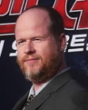
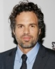
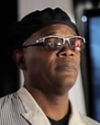

어벤져스 실사영화 시리즈의 1번째 작품이자 마블 시네마틱 유니버스 페이즈 1의 마지막 작품이다.
어벤져스 이전까지의 영화의 복선을 최종 회수하는 MCU 페이즈 1의 하이라이트이다.
페이즈 1의 부제가 'Avengers Assembled'이기도 한 만큼, 페이즈 1의 목적이자 대미가 되는 영화인 셈이다.
사무엘 L. 잭슨(닉 퓨리 역)이나 로버트 다우니 주니어(토니 스타크 / 아이언맨 역), 에드워드 노튼(브루스 배너 / 헐크 역) 등은 절대로 안 바꿀 것이라고 장담했는데, 결국 헐크 역의 노튼이 어벤져스 프로젝트에서 하차하고 마크 러팔로가 브루스 배너 / 헐크 역에 재캐스팅되었다. 이는 아이언맨이나 캡틴 아메리카의 배우도 바뀔수 있음을 의미한다. 인크레더블 헐크도 엄연히 어벤져스와 내용이 이어지는 영화인 건 부정할 수 없기 때문이다. 이후로 페이즈 3까지 MCU의 헐크 역은 마크 러팔로가 계속 맡고 있다. 헐크 뿐만 아니라 주요 배역들은 페이즈 3까지 바뀌지 않고 유지되었다.
|  |  |
 |
 |
 |
|---|---|---|---|---|
| 조스 웨던 (감독) |
로버트 다우니 주니어 (토니 스타크) |
크리스 에반스 (스티브 로저스) |
크리스 헴스워스 (토르) |
마크 러팔로 (브루스 배너) |
|  |  |
 |
 |
|
|---|---|---|---|---|
| 제레미 레너 (클린트 바튼) |
사무엘 L. 잭슨 (닉 퓨리) |
톰 히들스턴 (로키) |
스칼렛 요한슨 (나타샤 로마노프) |
코비 스멀더스 (마리아 힐) |
토니 스타크 : 중년 남성들한테 발기부전은 흔해 5명중 1명은...
브루스 배너 : 신이 약골이군ㅋ
토르 : 입양한 형제지
로키 : 이 녹색 괴물아! 난 신이다! 너희같은...
큰 틀만 보면 외계인의 침공으로부터 지구를 지켜낸다는 흔한 스토리인데 이런 소재의 할리우드 블록버스터는 대부분 침략자들의 상세한 설정을 다루게 되는 경우가 많다. 그러나 어벤져스는 악역들의 설정에 치중할 시간에 관객들이 공감대를 형성할 수 있는 영웅들의 설정에 더 많은 시간을 들여서 주인공들을 입체적인 캐릭터로 빚어내는 데 성공했으며, 심지어 본작의 주요 악역인 로키조차도 매력적인 캐릭터로 만들어내는 데 성공했다. 이러한 일이 가능했던 이유는 어벤져스를 만들기 전 이미 《아이언맨》, 《인크레더블 헐크》, 《토르: 천둥의 신》, 《퍼스트 어벤져》같은 개별 영화들이 나와 각 캐릭터의 설정을 확고히 잡아놨기 때문이다. 반대로 이 탓에 솔로 무비의 완성도를 떨어뜨렸단 비판도 받았지만, 그럼에도 《어벤져스》는 아이언맨, 헐크, 토르, 캡틴 아메리카 등 다양한 마블 코믹스의 슈퍼히어로들이 뭉쳐 외계인을 막아낸다는 다소 무리로 여겨졌던 스토리를 흠 잡을 데 없는 작품으로 완성시켜 평단의 극찬을 받았다.
완벽한 비중 분배가 이뤄진 히어로들의 액션 씬도 호평이다. 모든 히어로가 자신의 전투력을 최대한으로 발휘할 수 있는 환경에서 자신들만의 액션을 마음껏 선보였다. 특히 후반 대규모 전투에 나오는 롱테이크 씬의 평가가 아주 좋다. 뉴욕 맨해튼에 모두 모인 어벤져스 멤버들을 한 바퀴 돌려서 바라보는 카메라 워크와, 히어로들의 활약이 장면 전환 없는 롱테이크로 3분간 펼쳐지는 장면은 그야말로 카타르시스의 절정이라 할 수 있다. 이 영화가 얼마나 잘 짜여진 팀업 무비인지 가장 확실하게 느낄 수 있는 부분.
결론적으로 어벤져스는 마블은 물론 슈퍼히어로 영화계에도 최고의 전성기를 열게 해준 명작 중 하나다.
첫번째는 타노스가 최초로 등장하는 쿠키 영상이다. 아더가 타노스에게 로키는 인간들을 너무 얕봤으며, 그들을 경계해야 한다고 조언해준다. 어벤져스: 인피니티 워의 개봉으로 원작의 데스는 등장하지 않는 것으로 보인다. 따라서 이 때 아더가 말하는 데스는 원작에서 타노스의 애인이며, 모든 생명의 죽음을 관장한다.
두번째는 미국판 한정으로 엔딩 크레딧을 마친 후의 영상은 일종의 개그성 후일담으로, 본편에서 토니 스타크가 먹어보자고 하던 슈와마를 어벤져스 멤버들과 다같이 회식하는 장면이다. 바닥에 깨진 유리 조각이 널려있는 것을 보아, 아직 복구가 진행되는 중인 듯하다. DVD, 블루레이에는 슈와마 회식 장면도 포함되었다. 캡틴 아메리카는 턱을 괸 채로 먹고 있는데, 이는 담당 배우인 크리스 에반스가 당시 찍고있던 설국열차 촬영을 위해 기른 수염을 가리기 위해서이다. 한편 헐크 역할인 마크 러팔로는 웃겨 죽을 뻔해서 웃음을 참고 있었다고 한다(...).
또한 삭제신 또한 많은 분량을 차지하고 있다. 마블의 팬들이라면 이 영상을 보고 왜 저기서 저 장면이 나왔는지 대충 알 수 있을것이다.